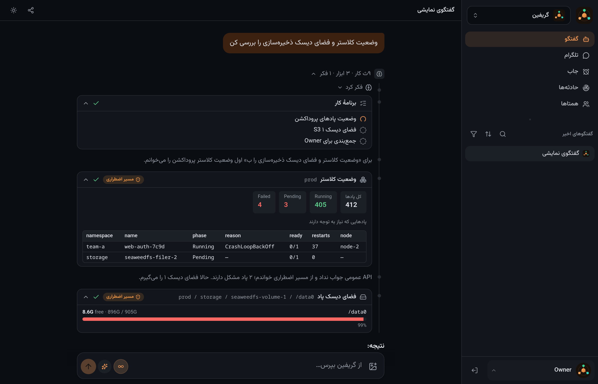

نیروی کار هوش مصنوعی سازمان شما، نه یک پنجرهٔ چت دیگر
گریفین روی زیرساخت خودتان نصب میشود، رخدادهای شبانه را پیش از اثر روی فروش ریشهیابی میکند، میان دستیارهای همکاران بدون جلسه و تیکت هماهنگی انجام میدهد و هر تغییر حساسی را پشت تأیید یککلیکی شما نگه میدارد.
curl -fsSL https://griffin.paziresh24.com/install.sh | sudo bash


از دریافت علامت تا تحویل نتیجهٔ تستشده
شما مسئله را به زبان ساده میگویید. ایجنت مادر کار را به متخصصهای کلاستر، لبهٔ CDN، دیتابیس و گیت تفویض میکند، خروجی را زنده روی محیط واقعی میآزماید و گزارش نهایی قابل تصمیمگیری را تحویل میدهد.
5xx Spike روی درگاه نوبتدهی همراه با افت ۵ دقیقهای پالس فروش آنلاین.
service-profiles روی pool دواتصالهٔ دیتابیس صف ساخته است. اصلاحیه آماده است؛ مرج و اعمال شود؟
پایان سردرگمی نیمهشب در ۵ داشبورد مختلف
پیش از اینکه مهندسی را بیدار کند، ابتدا بررسی میکند آیا مسیر واقعی خرید کاربر آسیب دیده است یا فقط نویز مانیتورینگ است. اگر فروش تحت تأثیر باشد، ریشه و راهحل آماده را یکجا میآورد.
ایجنتها از هم میپرسند؛ آدمها در کار عمیق میمانند
بهجای باز کردن تیکت یا قطع کردن تمرکز همکار تیم دیگر، دستیار هر نفر نقشهٔ مهارت و مخازن همکاران مجاز شرکت را میشناسد و در چارچوب دسترسی Read-Only مسأله را تا رسیدن به پاسخ مستند پیگیری میکند.

ترجمهٔ متریک و فروش به تصمیم روشن
مستقیم از Prometheus، گرافانا و دیتابیسهای عملیاتی کوئری میگیرد، روند لحظهای را با الگوی روزهای عادی میسنجد و نمودار و خلاصهٔ مدیریتی بدون نویز را صبحها در تلگرام میفرستد.
ساختهشده برای نتایجی که در صورتحساب و سرعت تیم دیده میشوند
گریفین حاصل نیاز واقعی یک تیم زیرساخت و محصول در مقیاس ترافیک میلیونی است؛ هر بخش آن برای حل یک گلوگاه واقعی شرکت طراحی شده است.
زمان رسیدن به ریشهٔ خطا (MTTR)
بهجای جابهجایی دستی میان لاگ پادها، گرافانا، لبهٔ CDN و کامیتهای گیتلب، همهٔ لایهها بهصورت موازی بررسی و با مسیر واقعی کاربر تطبیق داده میشوند.
حافظهٔ گیتمحور که با رفتن افراد پاک نمیشود
هر تلهٔ زیرساختی، ساختار شبکه یا قاعدهٔ کسبوکاری که کشف میشود، در مخزن گیت دانش ثبت میشود و در چتهای بعدی به همهٔ اجراها تزریق میگردد.
سوییچ خودکار میان اشتراکها بدون توقف تیم
اشتراکهای Claude، OpenAI Codex، Gemini و مدلهای محلی Ollama را در یک استخر مدیریت میکند و هنگام پر شدن سهمیهٔ ۵ ساعته، بدون قطع کار روی موتور بعدی میرود.
چرا مدیران فنی با خیال راحت گریفین را به زیرساخت پروداکشن وصل میکنند
امنیت در گریفین به «قول دادن مدل در پرامپت» متکی نیست؛ در جداسازی کانتینرها و کد بروکر قفل شده است.
کلیدهای شرکت هرگز وارد محیط مدل زبانی نمیشوند
کانتینر اصلی که نشست مدل و سندباکس در آن اجرا میشود هیچ رمز عبور، کلید SSH یا kubeconfigای ندارد. تمام کلیدها در کانتینر جداگانهٔ Broker یا خزانهٔ Infisical شما میمانند و فقط از طریق یک سوکت یونیکس محلی، ابزارهای تایپشده اجرا میشوند.
- پاکسازی خودکار خروجی ابزارها (Secret Scrubbing) پیش از بازگشت به مدل
- کوئریهای دیتابیس بهصورت پیشفرض در تراکنش Read-Only اجرا میشوند
- ابزارهای تغییردهنده و حذف تا کلیک مالک روی کارت تأیید در کد متوقف میمانند
به هر نفر دستیار خودش را بدهید و دستیارها را به هم وصل کنید
یک ایجنت مرکزی برای کل شرکت، مرزهای دسترسی را میشکند و کانتکست تیمها را قاطی میکند. در گریفین هر همکار نصب مستقل خودش را دارد و نصبهای تأییدشده روی دامنهٔ داخلی شرکت از طریق توکنهای Read-Only به هم وصل میشوند.
-
تأیید صریح مالک (
NETWORK_ADMIT=owner) برای پذیرش هر عضو جدید - مخفی ماندن فهرست همتاها و مهارتها از اینترنت عمومی (احراز هویت اجباری)
- صف خودکار تحویل پیام در صورت آپدیت یا خاموشی موقت ایجنت مقابل
وب، تلگرام، بله و مرورگر کروم — همه متصل به یک حافظه و یک سندباکس
نیازی نیست رفتار تیم را عوض کنید. از موبایل در تلگرام دستور بدهید، در پنل وب پریویو زندهٔ کدی که ایجنت نوشته را ببینید، و با مرورگر Playwright یا افزونهٔ کروم مطمئن شوید صفحهٔ جدید بدون خطای کنسول رندر میشود.
- پشتیبانی همزمان از ربات تلگرام، ربات بله و دستیار حساب رسمی مالک
- ساخت ایجنت متخصص جدید در ۳۰ ثانیه بهعنوان داده، بدون کدنویسی فریمورک
- پشتیبانی کامل از استاندارد MCP برای اتصال به سرویسهای بیرونی و داخلی

گریفین کجا میایستد؟
تفاوت یک محصول عملیاتی خودمیزبان با رابطهای چت ساده و کتابخانههای کدنویسی.
| نیاز واقعی سازمان | رابطهای چت (OpenWebUI / ChatGPT) | فریمورکها (LangChain / CrewAI) | گریفین (Griffin) |
|---|---|---|---|
| اجرای واقعی روی زیرساخت | خیر، کپیپیست دستی توسط انسان | نیازمند کدنویسی و نگهداشت مداوم | آمادهٔ کار با ۱۶۰+ ابزار و Worktree ایزوله |
| حفاظت از کلیدها و پروداکشن | بدون دسترسی یا بدون کنترل | کلیدها داخل همان پروسهٔ مدل | Broker جداگانه + تأیید یککلیکی مالک در کد |
| هماهنگی بین همکاران | چتهای جزیرهای و جدا | پیادهسازی دستی از صفر | شبکهٔ همتا به همتای ایجنتها (A2A Mesh) |
| استمرار هنگام پر شدن سهمیه | توقف کار با خطای سقف مصرف | شکست پایپلاین روی ۴۲۹ | سوییچ خودکار میان اکانتهای Claude، Codex و Gemini |
| آزمون کد و رابط کاربری | فقط تولید متن کد | محدود به اسکریپتهای دستی | پریویو زنده در چت + مرورگر واقعی Playwright |
یادداشتهای معماری از تجربهٔ واقعی پروداکشن
جزئیات فنی و مدیریتی دربارهٔ ساخت، ایمنسازی و بهرهبرداری از تیم ایجنتهای هوش مصنوعی در سازمان.
از چتبات تا نیروی کار خودمختار: چرا ایجنتهای هوش مصنوعی در سازمانها شکست میخورند؟
کالبدشکافی سه دیوار اصلی در استقرار AI سازمانی و چگونگی حل آنها با الگوی ایجنت مادر، متخصصها، Broker ایزوله و حافظهٔ گیتمحور.
اتاق فرمان شرکت در تلگرام و بله: ساخت دستیار اجرایی روی سرور خودتان
تفاوت اتصال ربات و همزاد حساب رسمی مالک، قوانین اصلاح درجا، سیاست صفر-رمز در چت و راهنمای راهاندازی در ۳ دقیقه.
معماری Agent Mesh: وقتی دستیار هر همکار با دستیار بقیهٔ تیم مذاکره و کار را تمام میکند
چرا یک ایجنت مرکزی برای کل شرکت جواب نمیدهد و چگونه نقشهٔ مهارتها و سهمیهٔ Read-Only گلوگاه تیکتهای بینتیمی را حذف میکند.
پایان بیدارباش ۳ صبح: طراحی اتاق عملیات خودکار برای کوبرنتیز، دیتابیس و CDN
تفکیک آلارم خام از اثر واقعی روی فروش و کاربر، تریاژ ۶۰ ثانیهای و گاردهای کدی برای جلوگیری از خطاهای خودکار در پروداکشن.
راهاندازی کامل در کمتر از یک دقیقه
فقط یک سرور لینوکس با Docker نیاز دارید. اسکریپت رسمی، کانتینر اپ و کانتینر ایزولهٔ Broker را با سوکت مشترک بالا میآورد.
curl -fsSL https://griffin.paziresh24.com/install.sh | sudo bashباز کردن رابط وب
روی پورت 3100 وارد شوید، زبان فارسی را انتخاب کنید و رمز مالک را بگذارید.
اتصال موتور هوش مصنوعی
اکانت Claude، OpenAI، Gemini یا مدل محلی Ollama را از بخش موتورها متصل کنید.
اتصال تلگرام و ابزارها
کد ۶ رقمی جفتسازی را به ربات خود بفرستید و ابزارهای زیرساختتان را فعال کنید.
پاسخهای کوتاه به دغدغههای امنیتی و فنی
آیا دادههای کد یا دیتابیس ما به سرور دیگری ارسال میشود؟
خیر. گریفین ۱۰۰٪ متنباز و خودمیزبان است. چتها در SQLite محلی، دانش در Git محلی و کلیدها در خزانهٔ رمزنگاریشدهٔ سرور خودتان میمانند. تنها ارتباط بیرونی، درخواست مستقیم به موتور هوش مصنوعی انتخابی خودتان (یا مدل کاملاً محلی Ollama) است.
چطور از خطای ناخواستهٔ هوش مصنوعی روی سرورهای پروداکشن جلوگیری میشود؟
ابزارهای خواندن از ابزارهای نوشتن جدا هستند. تغییرات کد فقط در شاخهٔ ایزوله به شکل Draft MR ثبت میشوند، کوئریهای دیتابیس بهصورت پیشفرض Read-Only هستند، و ابزارهای تغییردهنده یا حذف در کد بروکر تا تأیید صریح شما متوقف میمانند.
در ایران با محدودیت دسترسی به مدلهای خارجی چطور کار میکند؟
گریفین مدیریت پروکسی خروجی و مسیریابی انتخابی دامنهها را بهصورت داخلی دارد تا فقط ترافیک API مدلهای تحریمی از تونل رد شود و ارتباط با سرورها و دیتابیسهای داخلی شرکت مستقیم و بدون تأخیر باقی بماند.